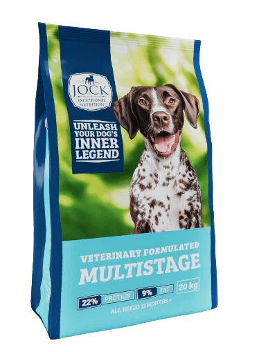

Alimentação para cãesJock Multistage
Jock Multistage
20 kg
Ração Jock Multistage para cães de todas as raças. A embalagem apresenta 22% de proteína, 9% de gordura e contém 20 kg.
- Todas as raças
- 20 kg
- 22% proteína
- 9% gordura
Informação da embalagem
Características apresentadas pelo produto.
Estes detalhes correspondem à informação visível na frente da embalagem. Confirme sempre o rótulo físico para ingredientes, dosagem e recomendações completas.
Para diferentes raças.
A embalagem identifica esta opção como “all breeds” e apresenta a indicação de 12 meses. Confirme a adequação ao seu cão com a equipa ou com o veterinário.
Antes de mudar a alimentação.
Ao experimentar uma ração nova, confirme a orientação da embalagem e introduza alterações de dieta com o cuidado recomendado pelo veterinário.
Comprar na Win Win
Peça disponibilidade antes de visitar.
Fale connosco
Envie-nos o nome Jock Multistage 20 kg e as necessidades do seu cão.
Receba confirmação
Confirmamos stock e preço para que possa planear a sua compra com tranquilidade.
Visite a Win Win
Venha à nossa loja em Maputo para levantar o produto e explorar mais opções.